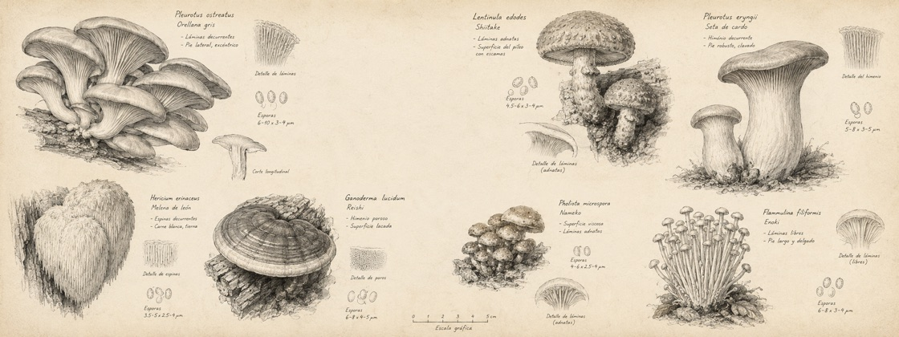

Setas
OS
Sistema de campo
Precisión agronómica con memoria de cuaderno. Una interfaz nacida en Tenjo para convertir cultivo, evidencia y criterio en decisiones.
Setas de la Peña · Tenjo, ColombiaS·OS
firma tipográfica · no sustituye el logo maestroDel sustrato
al dato.
Observar · registrar · decidirTINTA / ACTIVO / ATENCIÓN / INFO / ERRORCampo vivo
IBM Plex Sans — instrucciones claras y humanas.
IBM PLEX MONO · LOTE TJ-026 · 18.4 °C · 84% HR
Turno de cultivo
LOTES ACTIVOS04
AMBIENTE18.4°
ATENCIÓN02

Archivo botánico · materia, no ornamento07Nada crítico
sin contexto.
causa + lote + siguiente acciónUna señal, un significado.
Los acentos clasifican estado. La estructura vive en papel y tinta; nunca se decora una decisión.
ActivoAtenciónInformaciónArchivado